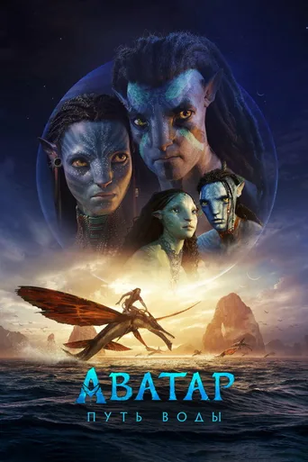

Аватар: Путь воды 2022
После принятия образа аватара солдат Джейк Салли становится предводителем народа на'ви и берет на себя миссию по защите новых друзей от корыстных бизнесменов с Земли. Теперь ему есть за кого бороться — с Джейком его прекрасная возлюбленная Нейтири. Когда на Пандору возвращаются до зубов вооруженные земляне, Джейк готов дать им отпор.
Открыть в каталогеДанные и постеры принадлежат их правообладателям. Этот продукт использует TMDB API, но не одобрен и не сертифицирован TMDB.